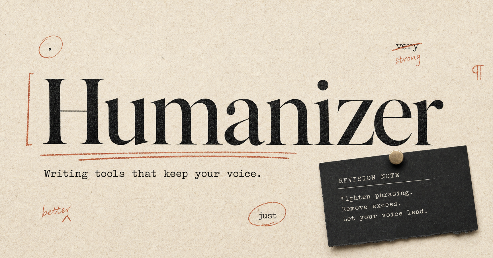
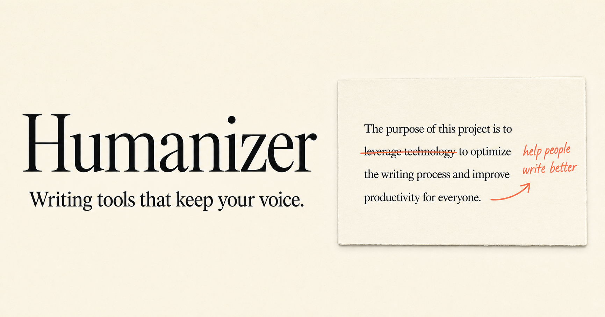

01
Specificity before polish
Replace generic importance, praise, and “future” language with the fact, condition, action, or consequence the draft can support.
Writing enhancement skills for Claude + Codex
Humanizer helps a draft carry its own weight: specific claims, real sources, deliberate structure, and the voice that made the draft worth writing.
Built for essays, proposals, UX copy, marketing, teaching, documentation, fiction, dialogue, and public-facing work.
Draft
Our groundbreaking update empowers teams with a seamless, intuitive collaboration experience.
Revision
Assign the review, see who has responded, and keep the decision beside the file.
The central skill
Start here
A complete, example-rich field guide with source archives, pattern references, editor lenses, citation checks, style-drift comparison, and deterministic linting.
01
Replace generic importance, praise, and “future” language with the fact, condition, action, or consequence the draft can support.
02
Keep the author’s useful repetitions, rhythm, dialect, plain verbs, and honest limits. Do not add fake roughness.
03
Check the claim, source, location, and entailment. A citation is not proof until it supports the exact sentence beside it.


The full Humanizer source library preserves the supplied Wikipedia material, the live field guide, 17 connected Wikipedia pages, and primary research. It treats patterns as revision cues, never proof of authorship.
Read the field guide ↗Copy, paste, revise
Start with the draft you have. These prompts ask for stronger reader value without inventing facts, smoothing out a real voice, or chasing a detector score.
Use $humanizer on the text below. Preserve every verifiable fact, keep my direct voice, and flag any claim that needs a source instead of adding detail. Return Keep, Change, and Verify. [PASTE DRAFT]
Use $humanizer to compare this draft with the authentic sample below. Keep my recurring terms, fragments, and punctuation unless they harm clarity. Identify generic residue; do not add mistakes to make the draft seem human. AUTHENTIC SAMPLE: [PASTE SAMPLE] DRAFT: [PASTE DRAFT]
Use $ux-writer, $frontend-ux, $design-taste-gate, and $humanizer as a release gate for this page. Check labels, information scent, responsive hierarchy, generic claims, unsupported benefits, and source or destination issues. Give the five highest-leverage fixes first. [PASTE COPY OR PAGE]
Use $critical-compass to audit this argument. Separate what holds up from what needs evidence, name the strongest missing check, and give me a narrower version that preserves the useful point. [PASTE TEXT]
Choose your home
Claude: individual skill
$humanizer.
Claude: studio bundle
Codex: skill collection
skills/ folder into your
project's.agents/skills/ folder, or your
user-level~/.agents/skills/ folder.
$ or let the task description route it.
One archive for Codex
Humanizer, writing craft, marketing, grants, TTRPG direction, UX writing, frontend UX, Design Taste Gate, Vibe Check, and Critical Compass reference mode in one extractable collection.
Complementary bundles
Humanizer is the final writing-quality gate. These studio packs add the specialist work before it: narrative, strategy, UX, grant process, or play at the table.
Claude plugin
Story architecture, show versus tell, publishing, originality, teaching, and a full TTRPG-facing creative toolkit.
Claude plugin
Marketing strategy, social content, public communication, audience framing, and Humanizer as the final copy gate.
Claude plugin
Resumes, cover letters, portfolios, grant process planning, evidence checks, and proposal review support.
Claude plugin
GM-facing writing, scene direction, player facilitation, rules teaching, campaign prep, and live-table craft.
Claude plugin
UX writing, frontend UX, design taste, visual assets, heuristics, and Humanizer for a public-facing quality pass.
Claude plugin
Vibe Check, project structure, debugging, GitHub conventions, browser workflows, and Humanizer in one builder pack.